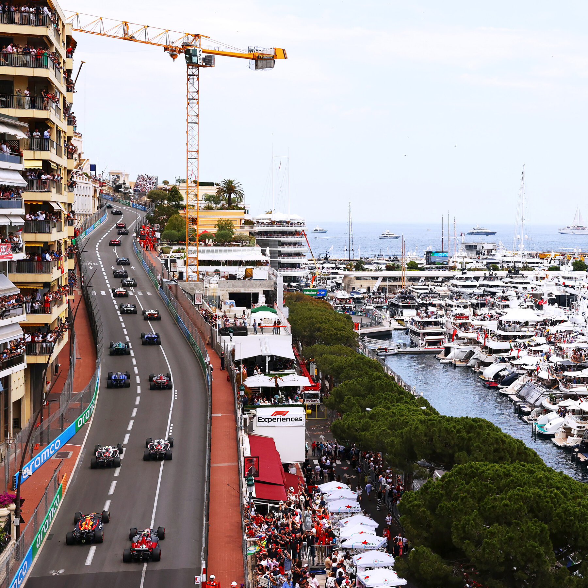

Monaco: why the tightest street circuit in the world still matters
It is slow, narrow and almost impossible to overtake on, yet winning here still counts for more than almost any other victory. We walk the track corner by corner, from Sainte Dévote up the hill to Casino Square, and look at why qualifying on Saturday is often worth more than the race itself on Sunday.